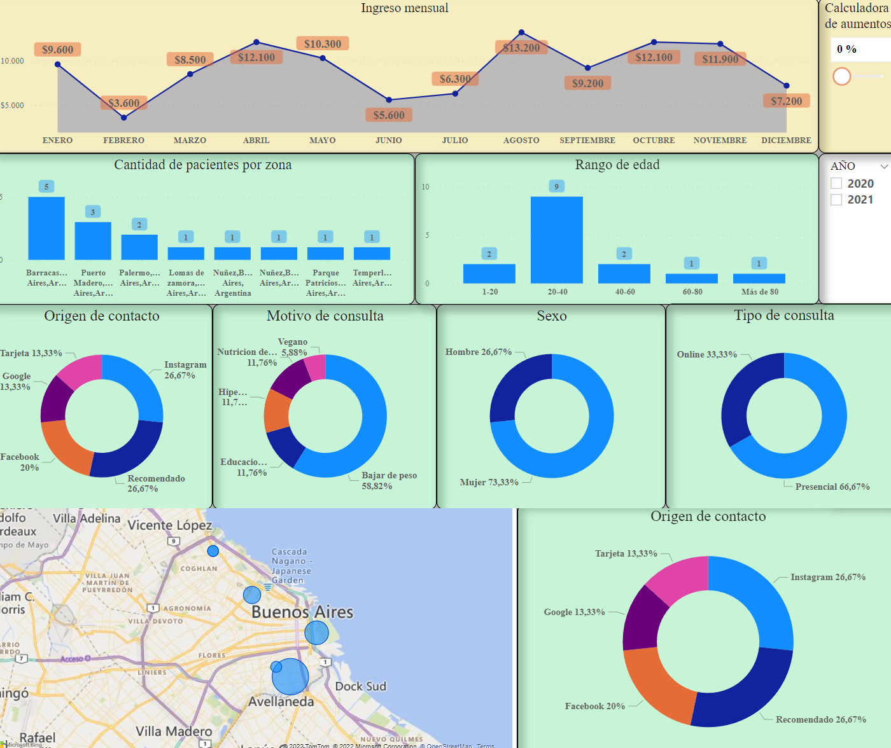

¿Qué es NutriBI?
NutriBI es un tablero de control diseñado para nutricionistas, creado sobre la pataforma de Microsoft, PowerBI.
En el mismo, vas a poder visualizar y llevar un control de todos tus pacientes, ver estadísticas, llevar un
registro de tus ingresos y más.
NutriBI es un pack de herramientas totalmente gratuito, hoy y simpre!